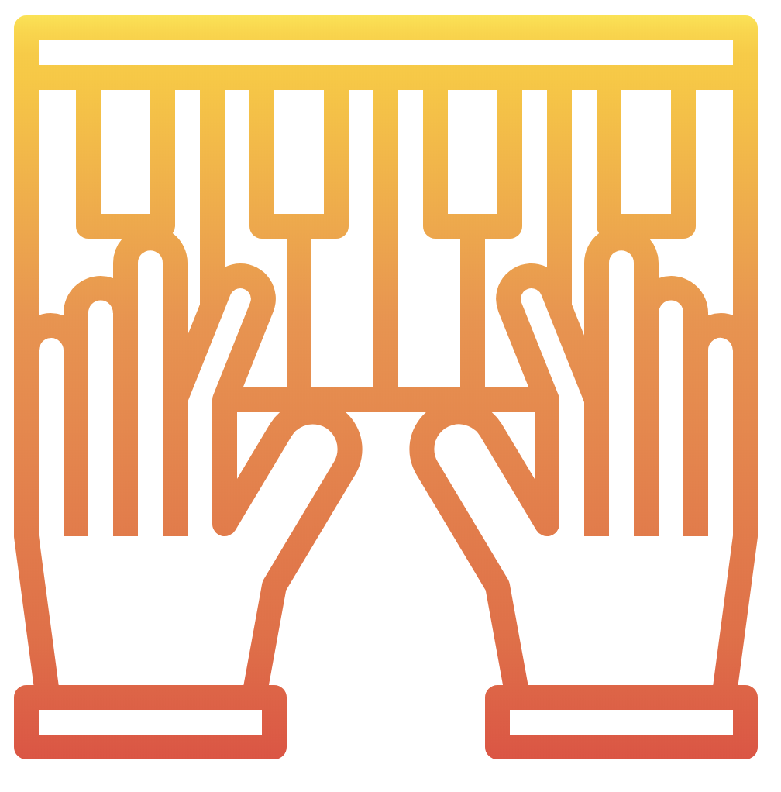
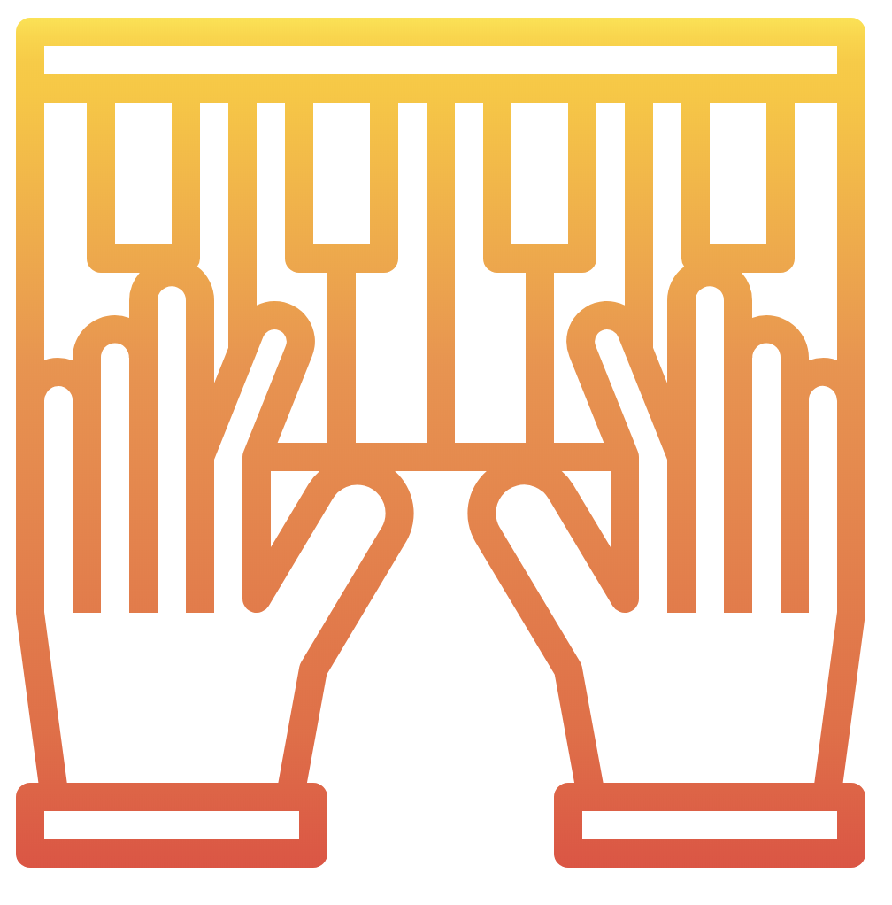

I'm Scot Gresham-Lancaster
Composer - Performer - Maker


I am a Musician, Designer, and Researcher in Oakland, California
The focus of my current research is on the unrealized potential of Listening to Data or sonification
LISTENING TO DATA (Sonification) is the new tool needed for analyzing the ever growing data cloud. Our work is perfecting the many ways to make better decisions by not just visualizing, but simply LISTENING TO DATA. The existing data tools rely almost exclusively on flawed elaborate interactive visualization of data. Data Science, AI and Big Data industries are only developing a wide variety of data visualization tools to allow rapid and accurate decision making. The time to bring in at least one more, our richest sense in many ways, LISTENING TO DATA into the mainstream !
I have worked designing new instruments in both hardware and software for decades. I have worked with synthisizer designers Tom Oberhiem, Sege Tcherepnin, Don Buchla and many others. My ground breaking telematic instruments and computer music network designs have recieved wide acclaim. My sound designs for theater productions and computer games have gained international recognition.
However, the bulk of my work is done nationally and internationally, so reach out and let's talk
CONTACT ME